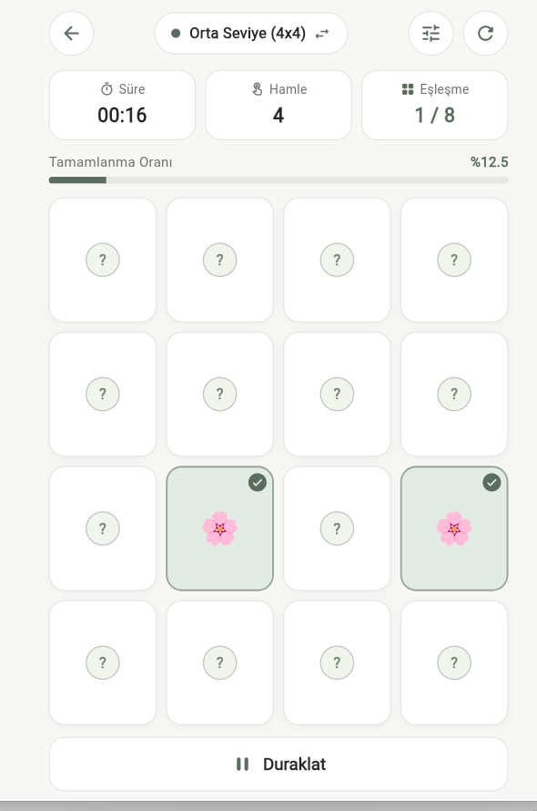
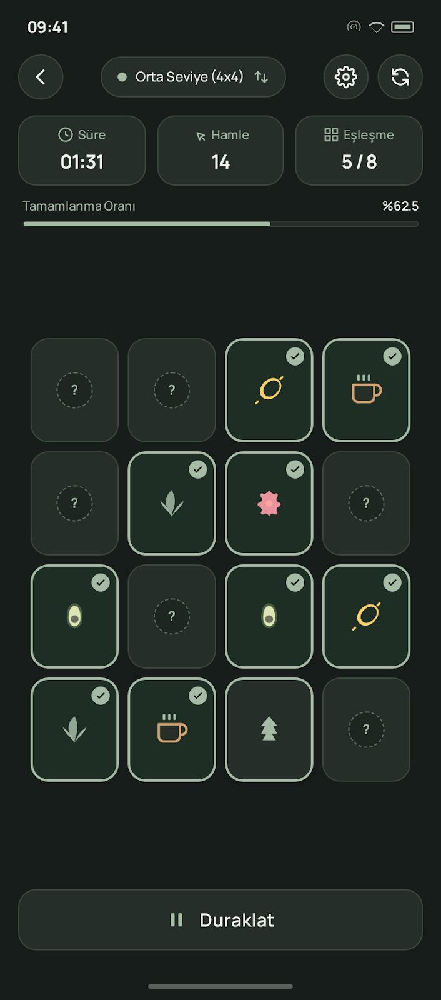
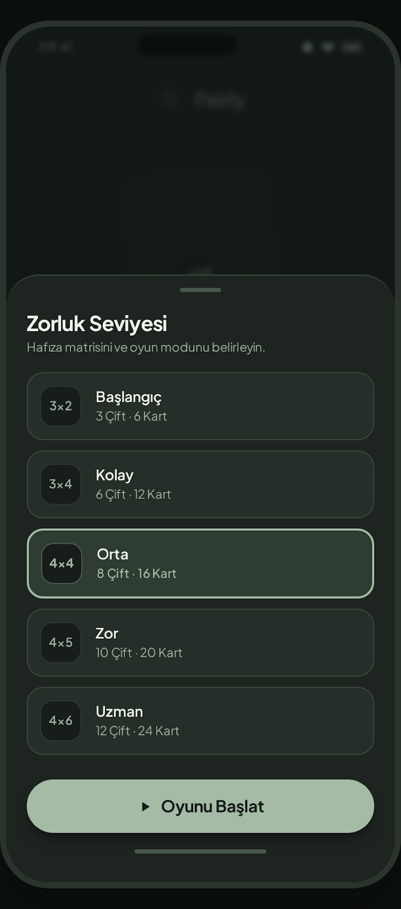
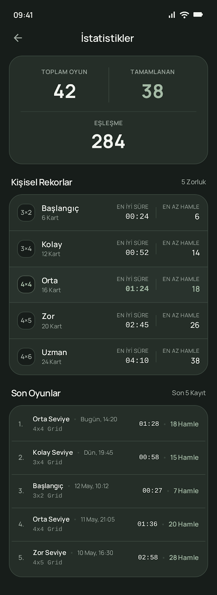
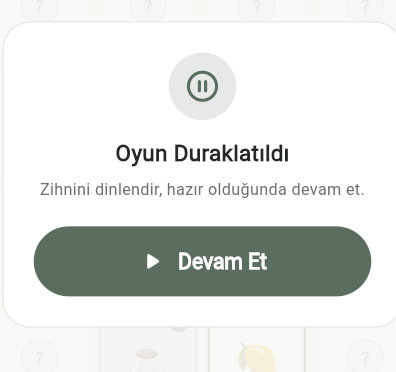

Hafızanı keşfet,
zihnini dinlendir.
Dingin, reklamsız ve odaklı mobil kart eşleştirme deneyimi.


Proje Amacı
Karmaşık menülerden ve görsel gürültüden arındırılmış, yalnızca odaklanmayı destekleyen dingin bir arayüz sunar.
Hiçbir harici paket kullanmadan, tamamen Flutter ve Dart'ın yerleşik yetenekleriyle modüler olarak geliştirilmiştir.
Beş zorluk seviyesi, canlı sayaçlar ve kalıcı kişisel rekor sistemiyle uçtan uca tamamlanmış bir üründür.
Kullanıcı Deneyimi


Oyun Algoritması
State Management
Yazılım Mimarisi
Arayüz Tasarımı

Testler ve Kalite Kontrol
5 zorluk matrisi, Fisher-Yates çift üretimi, doğru/yanlış eşleşme ve duraklatma kilidi doğrulandı.
Ana sayfa, seviye seçici alt pencere, duraklatma modalı ve küçük ekranda taşmasız görünüm test edildi.
Kişisel en iyi süre/hamle hesaplaması ve son 5 oyun geçmişi sınırlandırması doğrulandı.
Canlı Demo
Oyun Ekranı (4×4)
Canlı süre, hamle, eşleşme sayacı ve eşleşen kartlar.